응용지질기사 (2014-03-02 기출문제)
1과목: 암석학 및 광물학
1. 규장질 심성암을 국제지질과학연합(IUGS) 분류 안으로 분류할 때 분류기준광물에 속하지 않는 것은?
- 석영
- 휘석
- 준장석
- 사장석
(정답률: 82%)

2. 셰일층에 화강암질 마그마가 관입하였다. 이 지역이 지표에 노출되었을 때 화강암과 셰일의 경계부에서 볼 수 있는 변성암은?
- 혼펠스
- 대리암
- 편마암
- 에클로자이트
(정답률: 81%)
3. 다음 중 가장 저온·저압의 변성상은?
- 제올라이트상(zeolite facies)
- 에클로자이트상(eclogite facies)
- 녹색편암상(greenschist facies)
- 각섬암상(amphibolite facies)
(정답률: 66%)
4. 황토(loess)에 대한 설명으로 옳지 않은 것은?
- 대륙의 반건조 지대와 그 인접 지역에 분포하는 세립의 풍성퇴적물이다.
- 황토를 구성하는 광물립은 주로 신선한 석영, 장석, 운모, 방해석이다.
- 황토는 응결하는 힘이 있어서 층리가 잘 발달된다.
- 황토가 황색을 띠는 사실은 산화작용을 받았음을 의미한다.
(정답률: 67%)
5. 파도의 영향이 미칠 수 없는 상당히 깊은 해저에서 발견되는 조립질 퇴적물의 기원을 잘 설명해 주는 것은?
- 곡류
- 와류
- 해류
- 저탁류
(정답률: 87%)
6. 수분을 4% 이하 포함한 유리질 화산암으로 성분은 유문암과 비슷한 것이 대부분이며 파면이 패각상인 것은?
- 송지암
- 분석
- 부석
- 진주암
(정답률: 65%)
7. 다음 중 점성이 가장 작은 마그마는?
- 화강암질 마그마
- 현무암질 마그마
- 안산암질 마그마
- 유문암질 마그마
(정답률: 70%)
8. 다음 중 용해작용을 나타내는 화학반응은?
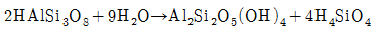
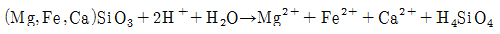
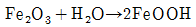
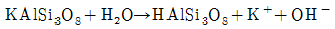
(정답률: 64%)
9. 화성암의 산출상태 중 관입암상에 대한 설명으로 옳지 않은 것은?
- 퇴적암의 층리면에 평행하게 들어간 편상의 화성암체를 지칭한다.
- 주로 반심성암으로 구성되어 있다.
- 관입암상의 상부에는 기공이 생겨 있는 일이 많다.
- 관입암상은 아래 위에 있는 퇴적암 중으로 작은 암맥을 뻗어 들어가게 하는 일이 있다.
(정답률: 52%)
10. 변성암에 나타나는 엽리조직 중 가장 세립질 조직은?
- 편마상 조직
- 편상
- 천매암질 조직
- 점판 조직
(정답률: 42%)
11. 다음 중 형석은 어떤 원자 결합을 하는 있는가?
- 금속결합(metallic bond)
- 공유결합(convalent bond)
- 이온결합(ionic bond)
- 판데르바알스 결합(Van der waals bond)
(정답률: 79%)
12. 다음 중 광학적으로 일축성에 속하는 결정은?
- 육방정계의 결정
- 단사정계의 결정
- 사방정계의 결정
- 삼사정계의 결정
(정답률: 60%)
13. 결정면에 조선이 발달하는 특징적인 광물이 아닌 것은?
- 석영
- 강옥
- 황철석
- 섬아연석
(정답률: 53%)
14. 칼슘(Ca)의 원자번호는 20이다. 즉, 칼슘 원자는 총 20개의 전자를 가지고 있다. 이 때 최외각 전자는 몇 개인가?
- 1개
- 2개
- 3개
- 4개
(정답률: 82%)
15. 다음 그림은 일정한 수의 결정면들이 모두 하나의 축에 평행하게 발달되어 있는 개형의 결정형의 스테레오그램이다. 다음 중 어떤 결정형의 스테레오그램인가?
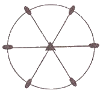
- 육방주
- 삼각주
- 능면체
- 정방편 삼각면체
(정답률: 46%)
16. 다음 중 활석, 어안석, 수활석 등에서 나타나는 광택은?
- 진주광택
- 지방광택
- 견사광택
- 유리광택
(정답률: 75%)
17. 다음 중 동질이상(Polymorph)의 관계가 아닌 것은?
- 흑연과 다이아몬드
- 황철석과 백철석
- 규선석과 홍주석
- 자철석과 적철석
(정답률: 69%)
18. 퍼어다이트(perthite)의 생성을 설명하여 주는 것은?
- 유질동상
- 동질이상
- 고용체
- 용리
(정답률: 72%)
19. 편광현미경은 광물의 광학적 특성을 관찰하는데 이용된다. 광축에 수직인 방향으로 제작된 박편을 놓고 수렴된 단색광을 통과시켜 직교니콜 하에서 관찰하면 그림과 같이 보이는데 이런 현상을 무엇이라 하는가?
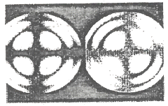
- 간섭상
- 다색성
- 복굴절
- 소광 현상
(정답률: 67%)
20. 규산염 광물의 기본구조 단위는 SiO4사면체이며, SiO4사면체들의 연결방식에 따라서 여러 가지 구조가 형성된다. 규산염 광물의 구조에 의한 분류로 옳지 않은 것은?
- 독립사면체형 – 감람석
- 층상구조 – 녹주석
- 단쇄형 – 규회석
- 복쇄형 – 투각섬석
(정답률: 69%)
2과목: 구조지질학
21. 다음 중 단층 조선이 지시하는 것은?
- 단층의 크기
- 단층의 주향과 경사
- 단층의 운동방향
- 단층 폭의 크기
(정답률: 62%)
22. 압쇄암대(mylonite zone)의 설명으로 옳지 않은 것은?
- 세립질(fine-grained)이다.
- 층상구조가 잘 발달(strongly layered appearance)된다.
- 큰 전단응력에 의해 생성된다.
- 퇴적구조가 잘 보존되어 있다.
(정답률: 75%)
23. 다음중 정상 층위를 가지고 있는 고생대 지층이 분포하고 있는 지역에서 역단층이 발생할 경우, (상반)/(하반)에 놓일 수 있는 지층으로 연결이 잘못 된 것은?
- 장산규암층/풍촌층
- 풍촌층/화절층
- 만항층/화절층
- 동점규암층/금천층
(정답률: 49%)
24. 단위중량이 3000kg/m3, 포아송비가 0.25인 암석에 1.5km심도에서 중력으로 인한 수직 하중으로 유도된 수평 응력은 얼마인가? (단, 중력가속도 : 10m/sec2)
- 10MPa
- 15MPa
- 20MPa
- 25MPa
(정답률: 48%)
25. 다음 중 응력 모어원(Stress Mohr circle)에 대한 설명으로 옳은 것은?(오류 신고가 접수된 문제입니다. 반드시 정답과 해설을 확인하시기 바랍니다.)
- 가로축은 전단응력(strar stress), 세로축은 수직응력(normal stress)을 나타낸다.
- 모어원의 중심은 평균응력(mean stress)을 나타낸다.
- 모어원과 수평 축이 만나는 양 끝 점은 주응력(principal stresses)을 나타낸다.
- 모어원의 지름은 편차응력(deviatoric stress)의 두 배를 나타낸다.
(정답률: 35%)
26. 판구조론에 입각한 형성 기원의 대륙-해양판 섭입(subduction)과 관련된 지체 구조적 현상만 나열한 것은?
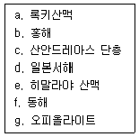
- a, c, e, f
- b, d, e, f
- b, d, f, g
- a, d, f, g
(정답률: 75%)
27. 한국의 지질계통 명 중에서 선캄브리아 누대에 속하지 않는 것은?
- 연천계(연천층군)
- 평안계(평안누층군)
- 상원계(상원누층군)
- 영남계(영남누층군)
(정답률: 66%)
28. 풍성지형 중 여러방향에서 불어오는 바람에 의해서 발달하는 모래 사구(sand dune)의 형태는?
- 초승달 사구(barchan dune)
- 별사구 (star dune)
- 포물선 사구(paravolic dune)
- 횡 사구(transberse dune)
(정답률: 81%)
29. 지구 내부의 구조 중 맨틀(mantle)에 대한 설명으로 옳지 않은 것은?
- 지구 전체의 약 82%에 달하는 체적을 차지하며, 약 2900km 깊이까지 분포한다.
- 맨틀 최상부의 암석 대부분은 화강암이다.
- 맨틀은 핵보다 밀도가 더 낮지만 가장 바깥층인 지각보다는 밀도가 높다.
- 상부 맨틀은 암석권과 연약권 등 2개의 서로 다른 층으로 나뉠 수 있다.
(정답률: 83%)
30. 지구조운동(tectonic process)의 영향을 가장 적게 받은 것은?
- 격자상 수계(trellis drainage)
- 직각상 수계(rectangular drainage)
- 수지상 수계(dendritic drainage)
- 방사상 수계(radial drainage)
(정답률: 73%)
31. 다음 중 역전습곡(overturned fold)에 대한 설명으로 옮은 것은?
- 양쪽 날개(limb)가 축면으로부터 동일하게 경사하는 습곡이다.
- 양쪽 날개가 축면의 경사에 관계없이 같은 방향으로 경사하는 습곡이다.
- 한쪽 날개가 90°를 초과하여 기울어진 습곡이다.
- 수평으로 편평하던 퇴적층이 큰 계단 모양으로 휘어져 만들어진 습곡이다.
(정답률: 71%)
32. 다음 중 발생 메커니즘이 다른 지진은?
- 1906년 미국 샌프란시스코 지진(규모 8.3)
- 1923년 일본 동경 지진(규모 7.9)
- 1999년 대만 치치지진(규모 7.6)
- 2004년 인도네시아 수마트라 지진(규모9.0)
(정답률: 71%)
33. 평사투영법에서 s-pole 다이어그램(π-다이어그램)을 이용하여 구할 수 있는 것은?
- 습곡축면(axial sulface)의 방향
- 습곡축(fold axis)의 방향
- 정부면(crest surface)의 방향
- 정부선(crest line)의 방향
(정답률: 62%)
34. 대양저 산맥의 열곡 주위에 일반적으로 형성되는 단층은?
- 변환단층
- 충상단층
- 정단층
- 역단층
(정답률: 69%)
35. 다음은 무엇이 되기 위한 조건인가?
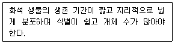
- 표준화석
- 시상화석
- 흔적화석
- 몸체화석
(정답률: 75%)
36. 알프스 산맥을 형성하는 조산운동과 가장 밀접한 연관이 있는 판의 경계는?
- 대륙판과 대륙판의 충돌 경계
- 해양판과 해양판의 발산 경계
- 대륙판과 해양판의 섭입 경계
- 해양판과 대륙판의 변환단층 경계
(정답률: 65%)
37. 다음 ( )안에 들어갈 용어의 순서로 옳은 것은?
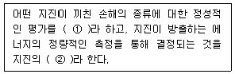
- 진도, 규모
- 규모, 진도
- 활동도, 세기
- 세기, 활동도
(정답률: 72%)
38. 다음 중 베게너가 주장한 대륙이동설(continental drift)의 증거로서 옳지 않은 것은?
- 해안선 모양의 유사성
- 지질 구조의 연속성
- 고생물 분포의 연속성
- 지각 열류량의 유사성
(정답률: 80%)
39. 아래 그림은 등고선(a-e)도 상에 사암층(짙은 부분)을 나타낸 것이다. 다음 설명 중 옳지 않은 것은?
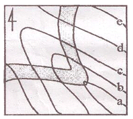
- 등고선 a에서 e로 갈수록 고도가 높아질 경우, 사암층과 계곡(또는 능선)의 경사 방향이 같다.
- 등고선 a에서 e로 갈수록 고도가 낮아질 경우, 사암층과 계곡(또는 능선)의 경사 방향이 같다.
- 등고선 a에서 e로 갈수록 고도가 높아질 경우, 사암층의 경사방향은 북서이다.
- 등고선 a에서 e로 갈수록 고도가 낮아질 경우, 사암층의 경사방향은 북서이다.
(정답률: 61%)
40. 주향과 경사가 각 N30°E, 60°SE 인 절리면이 있다. 이 절리면의 방향성을 경사방향/경사로 바르게 표시한 것은?
- 030/60
- 120/60
- 210/60
- 300/60
(정답률: 75%)
3과목: 탐사공학
41. 방사능 탐사의 측정 대상이 γ-선이 물질과 작용하는 주요한 방식에 해당하지 않는 것은?
- 광전 효과
- 콤프톤 효과
- 쌍생산
- 핵 분열효과
(정답률: 39%)
42. 수평 2층 구조에 대한 굴절법 탄성파 탐사에서 다음과 같은 주시곡선을 얻었을 때 1층의 두께(Z)를 바르게 나타낸 식은? (단, V1, V2는 1층과 2층의 탄성파 전파속도)
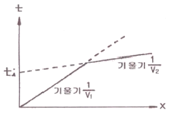
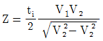
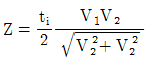
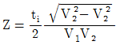
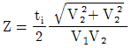
(정답률: 47%)
43. 유정(油井) 탐사에서 사암 등과 같은 투수성 지층을 판별하고, 이들과 셰일층과의 경계를 파악하고자 할 때 주로 사용되는 물리 검층법은?
- 자연전위 검층
- 전자유도 검층
- 유도분극 검층
- 전기비저항 검층
(정답률: 74%)
44. 지시원소(Pathfinder)에 대한 설명으로 옳지 않은 것은?
- 일반적으로 광체 내에 함유되어 있는 경제적 개발가치가 있거나 광체내 주성분 원소와 관계가 있는 원소를 말한다.
- 지구 화학적 환경에서 이동도가 작고 탐사대상 광체와 지질학적으로 관련성이 있어야 한다.
- 지시원소는 화학분석이 용이하고 분석비가 싸야 한다.
- 지구화학탐사에서 광체를 발견하기 위해 분석 대상이 되는 원소이다.
(정답률: 74%)
45. 다음 그림은 전자탐사에 있어서 1차장(
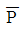
)과 2차장(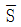
) 및 합성장(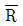
)을 나타낸 것이다. 위상각이 α, 1차장과 2차장 사이의 각이 β일 때 다음 설명 중 옳지 않은 것은?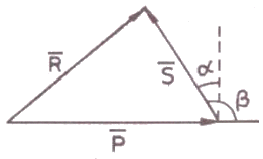
- 좋은 전도체는 α가 90°에 가깝고, 나쁜 전도체는 α가 0에 가깝다.
- 좋은 전도체는 동상성분이 크나 나쁜 전도체는 동상성분이 0에 가깝다.
- 좋은 전도체는 이상성분이 크나 나쁜 전도체는 이상성분이 0에 가깝다.
- 나쁜 전도체는 이상성분이 동상성분보다 약간 크게 나타난다.
(정답률: 45%)
46. 반사법 탄성파 자료의 전산처리 과정 중 실제 진폭 자료에서 구형 발산에 의한 진폭 감쇠 및 흡수에 의한 감쇠 효과를 보상하여 신호의 진폭을 조정하는 작업은?
- 편집(editing)
- 이득회수(gain recovery)
- 뮤팅(muting)
- 공심점 취합(common midpoint gather)
(정답률: 47%)
47. 자기장 강도의 단위는 국제단위계(SI)에서 nT(nanotesla)이며, cgs단위계에서는 0e(Oersted)이다. 1 0e는 단위 자극 당 1 dyne의 자기장 강도이다. 1 0e는 몇 감마(γ)인가?
- 103γ
- 104γ
- 105γ
- 106γ
(정답률: 50%)
48. 다음 중 자연감마선 검층에서 측정되는 감마선 방출의 주된 원소가 아닌 것은?
- 우라늄 238(U238)
- 토륨232(Th232)
- 칼륨40(K40)
- 세슘137(Cs137)
(정답률: 63%)
49. 다음 중 지오레이다 탐사법의 적용분야가 아닌 것은?
- 지하 매설물 조사
- 천부의 정밀 지반조사
- 해저 심부의 유적지 탐사
- 구조물의 안전진단을 위한 비파괴 검사
(정답률: 66%)
50. 다음 중 암석의 절대연령 측정법이 아닌 것은?
- K-Ar법
- Rb-Sr법
- U-Pb법
- K-Pb 법
(정답률: 69%)
51. 전기비저항 탐사를 수행할 때 전극 배열에 관한 설명으로 옳지 않은 것은?
- 웨너 배열은 전위전극 간격이 커져도 탐사기기의 민감도를 증대시킬 필요가 없으며, 겉보기 비저항 식이 간단하다.
- 슐럼버저 배열은 전위전극 간의 간격이 전류전극간의 간격에 비해 훨씬 좁다.
- 슐럼버저 배열은 국부적인 지표면 근처의 수평적 변화에 웨너 배열보다 민감하다.
- 쌍극자 배열은 신속하게 수직 및 수평 탐사를 수행할 수 있어 비교적 광역적으로 지하의 2차원적인 전기 비저항 정보를 얻을 수 있다.
(정답률: 55%)
52. 지하 투과레이다 탐사법(GPR)에서 레이다파의 전파속도에 가장 큰 영향을 미치는 매질의 성질은?
- 대자율
- 유전율
- 밀도
- 전기비저항
(정답률: 75%)
53. 상층과 하층의 속도와 밀도가 각각 V1=2000m/sec, =2g/cm3 및 V2=4000m/sec, = 3g/cm3인 두 층의 경계면에서의 탄성파 반사계수는? (단, 탄성파는 상층에서 하층으로 경계면에 수직으로 입사했다고 가정)
- 0.5
- 0.4
- 0.3
- 0.2
(정답률: 46%)
54. 배나 항공기를 이용하여 중력탐사를 할 때 빠른 속도 때문에 발생되는 지구 자체의 원심가속도 변화로 인한 중력의 변화를 보정하는 것은?
- 계기 보정
- 지형 보정
- 부게 보정
- 에트뵈스 보정
(정답률: 78%)
55. 직류 도는 저주파 교류를 시추공 내에 위치하는 이동전극 C1과 지표상에 고정되어 있는 전극 C2 사이에 흘려보내고 두 전극 사이에 있는 지층의 전기저항을 측정하는 검층법은?
- 단극 전기저항 검층
- 노말 전기비저항 검층
- 레터럴 전기비저항 검층
- 전자유도 검층
(정답률: 55%)
56. 다음 중 호이겐스의 원리를 가장 잘 설명한 것은?
- 음원으로부터 무한정 멀리 떨어진 곳에서의 에너지는 0이 된다.
- 파면을 구성하는 파면상의 각 점들은 새로운 구면파를 발생하는 점원이 된다.
- 횡파와 종파가 불연속면을 만나면 반사와 감쇠가 동시에 일어난다.
- 파가 전파될 대 고정된 임의의 두 점 사이의 파의 경로는 가능한 여러 개의 경로 중에서 진행 시간이 최소가 되는 경로이다.
(정답률: 61%)
57. 다음 중 중력이상이 나타나지 않아 중력탐사를 적용하기 어려운 곳은?
- 탄화수소 탐사 지역
- 수평으로 쌓인 퇴적층 지역
- 지하 공동이 있는 지역
- 암석 계곡이 매몰된 지역
(정답률: 72%)
58. 지구화학 탐사를 위한 토양시료의 채취에 가장 적당한 토양층은?
- O층
- A층
- B층
- C층
(정답률: 78%)
59. 수평 3층 구조에 대해 굴절법 탄성파 탐사를 실시하여 다음과 같은 주시곡선을 얻었다면 그 이유로서 가장 적당한 것은 어느것인가? (단, 1층의 속도=V1, 2층의 속도 = V2, 3층의 속도=V3)(오류 신고가 접수된 문제입니다. 반드시 정답과 해설을 확인하시기 바랍니다.)
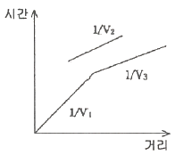
- 중간층의 속도가 상하부층의 속도보다 느리기 때문이다.
- 중간층의 속도가 상하부층의 속도보다 빠르기 때문이다.
- 중간층의 두께가 상하부층에 비해 매우 얇기 때문이다.
- 중간층의 두께가 상하부층에 비해 매우 두껍기 때문이다.
(정답률: 77%)
60. 다음의 그림에서 2층의 S파 속도가 2500m/s 일 때, 스넬의 법칙을 이용하여 1층의 S파 속도를 구하면 얼마인가?
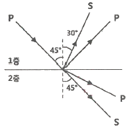
- 866m/s
- 1414m/s
- 1768m/s
- 2449m/s
(정답률: 45%)
4과목: 지질공학
61. 완전히 풍화된 화강암의 특징으로 옳지 않은 것은?
- 입자 주위에 균열이 존재한다.
- 흑운모 및 사장석 입자가 점토질화 된다.
- 구성 광물 입자의 표면에 광택이 있다.
- 시료를 포화시키면 강도가 거의 소실된다.
(정답률: 68%)
62. 다음은 흙의 전단강도에 대한 설명이다. 옳지 않은 것은?
- 흙의 전단강도는 흙 입자 사이에 작용하는 점착력과 내부마찰력에 의해 결정된다.
- 흙의 전단파괴는 흙 내부의 전단응력이 전단 강도보다 크게 작용할 때이다.
- 흙의 점착력은 흙의 내부마찰각의 크기와 비례한다.
- 흙 내부의 전단응력에 저항하는 힘이 전단저항이고, 전단저항의 최대한도를 전단강도라고 한다.
(정답률: 52%)
63. 지반응력 중 수직방향 응력을 σv, 수평으로 작용하는 두 방향 응력을 각각 σh1, σh2 라고 할 때 주향이동단층(strike-slip fault)의 발생과 관련된 응력조건은? (단, 최대중응력은 σ1, 최소주응력은 σ3이다.)
- σ1=σh1, σ3=σh2
- σ1=σh1, σ3=σv
- σ1=σv, σ3=σh1
- σ1=σv, σ3=σh2
(정답률: 71%)
64. 다음 중 단열암반에 설치된 시추공으로부터 얻을 수 있는 정보에 해당되지 않는 것은?
- 단열주향
- 단열크기
- 단열경사
- 단열간격
(정답률: 66%)
65. 석회암의 풍화에 따른 공동의 함몰로 생긴 침하형태는?
- 차별침식
- 트러스트단층
- 토플링
- 용식 함몰지
(정답률: 76%)
66. 다음 중 슬레이크(slake)와 팽창 현상이 가장 두드러지게 나타나는 암석은?
- 화강암
- 사암
- 석회암
- 이암
(정답률: 59%)
67. 다음 중 자유면 대수층에 대한 설명으로 옳지 않은 것은?
- 자유면 대수층 내에 부존되어 있는 지하수면을 자유면 지하수라 한다.
- 지하수면은 고정된 것이 아니라 주기적으로 변동한다.
- 대수층 상부에 덮개암이 존재한다.
- 지하수면에서의 압력이 대기압과 동일하다.
(정답률: 71%)
68. Q-system을 이용하여 암반분류를 실시한 결과 Q값이 4.3으로 결정되었다. 이 값을 이용하여 추정할 수 있는 RMR 값은 얼마인가? (단, Bieniawski(1976) 제안식을 사용할 것)
- 54
- 57
- 60
- 63
(정답률: 60%)
69. 공극비(e)가 0.55, 함수비(w)가 15%, 비중(Gs)이 2.40인 사질점토의 습윤 단위중량은?
- 1.55t/m3
- 1.78t/m3
- 1.87t/m3
- 1.96t/m3
(정답률: 65%)
70. 원위치시험 중 특성시험에 해당되지 않는 것은?
- 공내재하시험
- 평판재하시험
- 투수시험
- 표준관입시험
(정답률: 46%)
71. 암석의 삼축압축시험에서 봉압(Confined pressure)이 증가할 때 나타나는 현상으로 옳지않은 것은?
- 변형률 경화현상이 발생된다.
- 연성거동에서 취성거동으로 전이현상이 일어난다.
- 최대강도가 증가한다.
- 변형률속도의 증가율이 크게 된다.
(정답률: 65%)
72. 사질토 지반에 폭 40cm의 재하판으로 평판재하시험을 실시한 결과 극한 지지력은 20t/m2이었다. 이 지반에 1.5m 폭의 기초를 설치할 때 극한지지력은?
- 5.3t/m2
- 20t/m2
- 55t/m2
- 75t/m2
(정답률: 39%)
73. 연약지반 개량공법을 개량 원리에 따라 분류할 때 하중분산 공법에 해당하지 않는 것은?
- 동압밀 공법
- 침상 공법
- 샌드매트 공법
- 표층혼합처리 공법
(정답률: 45%)
74. 암반 분류법인 Q-시스템에 대한 설명으로 옳지않은 것은?
- RQD/Jn 항목은 불연속면에 의해 형성되는 블록의 변질정도를 나타낸다.
- Jr/Ja 항목은 절리면 또는 충전물의 거칠기 및 마찰특성을 나타낸다.
- JW/SRF 항목은 터널 굴착 현장에서의 지하수압 및 현장응력(active stress) 수준이 고려된다.
- Q-시스템은 6개의 변수를 사용하여 암질을 정량적으로 평가하는 방법이다.
(정답률: 75%)
75. 지반의 특성을 파악하고 실내시험용 시료를 얻기 위하여 사용하는 샘플러 중 비교란 시료의 채취에 사용되지 않는 것은?
- 분리형 원통 샘플러(split spoon sampler)
- 포일 샘플러(poil sampler)
- 고정 피스톤 샘플러(stationary piston sampler)
- 더블 튜브 코어 바렐(double tube core barrel)
(정답률: 65%)
76. 점착력이 5kN/m2이고, 내부마찰각이 25° 인 흙 속의 파괴면에 작용하는 수직응력이 50kN/m2일 때 흙의 전단강도는?
- 24.3kN/m2
- 26.6kN/m2
- 28.3kN/m2
- 30.6kN/m2
(정답률: 62%)
77. 경사가 30°인 사면에 단위중량이 2.7g/cm3이고, 한 변의 길이가 1.0m인 정육면체의 암석 블록이 놓여있다. 사면과 블록의 마찰각은 40° 이고 점착력은 0이다. 블록의 미끄럼에 대한 안전율은 얼마인가?
- 1.45
- 1.33
- 1.00
- 0.75
(정답률: 24%)
78. 투수계수에 영향을 미치는 요소에 대한 설명으로 옳지 않은 것은?
- 공극비가 커질수록 투수계수는 증가한다.
- 물의 점성이 클수록 투수계수는 작아진다.
- 포화도가 클수록 투수계수는 작아진다.
- 물의 온도가 높을수록 투수계수는 증가한다.
(정답률: 69%)
79. 사면안정공법은 안전율을 유지하기 위한 사면보호공법과 안전율을 증가시키기 위한 사면보강공법으로 나눌 수 있다. 다음 사면보강공법 중 그 성격이 다른것은?
- 앵커공법
- 록볼트공법
- 압성토공법
- 옹벽공법
(정답률: 57%)
80. 포화대의 수리지질학적 특성은 지하수의 흐름특성과 저유특성으로 구분할 수 있다. 다음 중 포화대의 저유특성에 영향을 미치는 요인이 아닌 것은?
- 공극률
- 비저유계수
- 투수량계수
- 비산출률
(정답률: 62%)
5과목: 광상학
81. 판구조론적 판의 경계에 따라 다양한 유형의 광상들이 생성된다. 다음 중 섭입대 주변에서 일반적으로 생성되는 광상 유형에 해당하는 것은?
- 반암형 광상
- 보오크사이트광상
- 라테라이트광상
- 호상철광상
(정답률: 46%)
82. 열수광상에서의 모암의 변질작용에 해당하지 않는 것은?
- 변질 안산암화작용
- 규화작용
- 황옥화작용
- 탄산화작용
(정답률: 35%)
83. 다음 중 지질온도계로 활용되는 안정 동위원소 연구를 통하여 알 수 없는 것은?
- 광상 형성 온도
- 광상 형성 연대
- 광상 형성 기원
- 광상 형성 환경
(정답률: 39%)
84. 석탄화 과정에서 성분의 변화가 관찰되는 석탄의 주구성 물질에 해당되지 않는 것은?
- 알루미나
- 고정탄소
- 수분
- 회분
(정답률: 66%)
85. 다음 중 페그마타이트 광상에서 잘 농집되어 산출되는 원소와 가장 관계가 먼 것은?
- 니오븀(Nb)
- 금(Au)
- 탄탈륨(Ta)
- 리튬(Li)
(정답률: 69%)
86. 다음 주 고품질의 석회암이 산출되는 지층은?
- 백악기 유천층군
- 쥐라기 대동층군
- 신생대 연일층군
- 고생대 풍촌층군
(정답률: 48%)
87. 우리나라에는 제3기 지층의 분포면적이 대단히 협소하다. 다음중 제 3기 지층에 해당하는 것은?
- 회동리층
- 장성층
- 서귀포층
- 묘곡층
(정답률: 82%)
88. 다음은 우리나라 석탄층 분포와 관련이 있는 평안계 지층들이다. 이중 가장 하부에 존재하는 지층은?
- 홍점통
- 사동통
- 고방산통
- 녹암통
(정답률: 56%)
89. 생산중인 광체, 시추나 다른 특수한 측정에 의해 존재가 확인된 광석, 특수한 장소에 존재한다고 확실하게 추정되는 잠재적인 모든 광석을 포함하는 용어는?
- industrial minerals
- resources
- reserves
- ore deposits
(정답률: 53%)
90. 광상의 형성과 밀접한 관련성이 있는 암석내의 이차공극(secondary opening)은 유용광물의 농집에 필요한 공간을 제공하는 측면에서 매우 중요한데 이의 형성 메카니즘에 해당되지 않는 것은?
- 습곡작용
- 퇴적작용
- 수축작용
- 화산암의 함락
(정답률: 48%)
91. 천열수광상에 대한설명으로 옳지 않은 것은?
- 광상의 생성온도는 100~200°C이다.
- 맥상광체에서 피각상 구조를 보인다.
- 모암변질대가 협소하고 교대광상이 우세하게 나타난다.
- 모암변질 광물로서는 녹니석(chlorite), 견운모(sericite) 등이 있다.
(정답률: 40%)
92. 다음 중 망간(Mn)광상에 대한 설명으로 옳지 않은 것은?
- 망간은 제련용 용융제 및 합금용 등으로 이용된다.
- 우리나라에 분포하는 대부분의 망간광상은 퇴적광상과 변성광상에 해당된다.
- 우리나라의 망간광산은 대체로 한반도 중부와 동남부에 분포한다.
- 우리나라의 주요 망간광상에는 장군광상, 어상천광상, 동남광상 등이있다.
(정답률: 32%)
93. 마그마의 분화작용 등에 의해 마그마 내에 함유된 유용금속광물들이 상대적으로 부화, 농집되어 형성된 광상에 해당 되는 것은?
- 납석광상
- 호상철광상
- 반암동광상
- 크롬철석광상
(정답률: 34%)
94. 다음 중 상동광상에 대한 설명으로 옳지 않은 것은?
- 상동광상은 대규모 스카른형 중석ㆍ휘수연석 광상이다.
- 주요 광석광물은 회중석, 포웰라이트, 철망간중석, 휘수연석 등이다.
- 모암은 풍촌석회암 및 묘봉층에 협재된 석회암이다.
- 맥석광물은 대부분 황화광물이다.
(정답률: 39%)
95. 현재까지 확인된 우리나라 형석광상의 성인에 해당하지 않는 것은?
- 열수교대광상
- 공극충진광상
- 페그마타이트 광상
- 마그마분결광상
(정답률: 34%)
96. 스카른 광상과 관련된 모암변질 산물, 즉 변질광물은 매우 다양한 편이다. 다음 중 스카른 광상의 대표적인 모암변질 광물이 아닌 것은?
- 첨정석, 스카폴라이트
- 투각섬석, 양기석
- 아둘라리아, 조장석
- 투휘석, 석류석
(정답률: 45%)
97. 강원도 연화광산에서 주로 산출되는 광석광물은?
- 중정석
- 섬아연석
- 회중석
- 금홍석
(정답률: 57%)
98. 현재까지 확인된 바에 의하면 우리나라의 금ㆍ은 광상의 생성이 광상의 숫자적으로 가장 많이 진행된 시기는?
- 제3기
- 백악기
- 쥐라기
- 트라이아스기
(정답률: 46%)
99. 석유의 유출을 막아주는 유개암(cap-rock)으로서 가장 적당한 암석은?
- 셰일
- 사암
- 역암
- 현무암
(정답률: 75%)
100. 열수 광화유체가 투수성(permeable) 암석에 유입되어 광상을 형성하는 경우 일반적인 광상의 형태는?
- 층상(bedded) 광상
- 분산형(disseminated) 광상
- 열수 맥상형(vein) 광상
- 반암동(porphyry copper) 광상
(정답률: 22%)